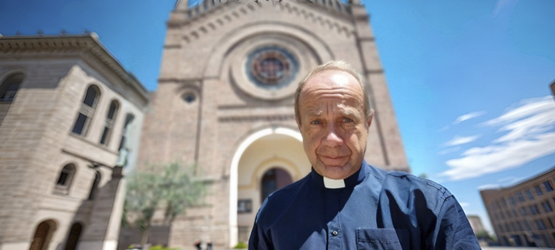

Bienvenidos a la Parroquia
Un lugar de fe, comunidad y esperanza.

Misas y Celebraciones
Acompáñanos en nuestras actividades semanales.

Espiritualidad y Reflexión
Momentos de oración para el alma.

Encuentros Comunitarios
Unidos en la fe y la fraternidad.